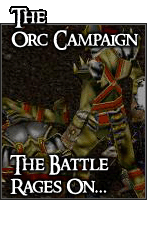
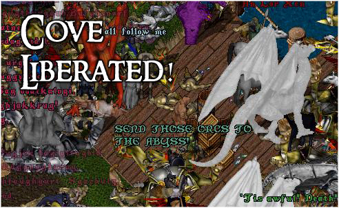

|  |
The Orc Campaign: Key Events
 7th January 2005: Cove
liberated! 7th January 2005: Cove
liberated!
4th January 2005: The Baronship
of Cove receives Stronghold from wealthy merchants.
29th December 2004: Commander
Eason leads a doomed combat operation inside Cove.
28th December 2004: Sergeant
Shadwell besieges Cove using barriades, and leads offensive through Docks.
23rd December 2004: Cove Barracks
attacked by Orc force. Mysterious figure appears.

7th January 2005: Commander's Log - Gregor Eason
After many nights planning offensive tactics, seeing to the wounded, praising
the dead, we can finally know peace. Late this evening, Cove was liberated
by an army of Britannians, alongside Cove Militia and angry citizens. It
was a sight that I shall remember for the rest of my days. So many had answered
the call to arms, so many. The Orcs were completely overwhelmed by the attacking
force; even the Ogre Lords that were guarding the Baron's north tower could
not defend against the assault. A grand victory, indeed.
And so, our campaign against the Orc horde ends. Victory is ours. Cove is
free. The homeless may return. We can, at last, have some rest.
4th January 2005
It appears our efforts against the Orc horde have been rewarded. The two
wealthy merchants, Aldo Purehands and Whispering Green, have selected the
Baronship as the guild with the most aggressive activity against the force
occupying Cove; and has presented a Stronghold with many resources that can
be used in our campaign against the Orcs. This brings much celebration to
the hearts of the citizens and guardsmen of the Baronship, who long have
fought hard for the freedom of Cove.
28th December 2004
Until this day, our actions against the Orc horde have not been documented.
But, I feel the need for a journal to be kept in these dark times. Not so
that we may count our dead, nor consider our casulties, but so that we may
recognise our success, and reward our valor. The Orcs are beginning to learn
a very important lesson; Fear.
The more they fear, the weaker they grow. Just as the Mysterious Figure said
that night we were 'visited', "If you show the perserverance you have shown
here, I am sure Cove will be free one day."
Those words I take with me into my heart, on the blacker days of our Campaign
against the Orcs.
Close Window |